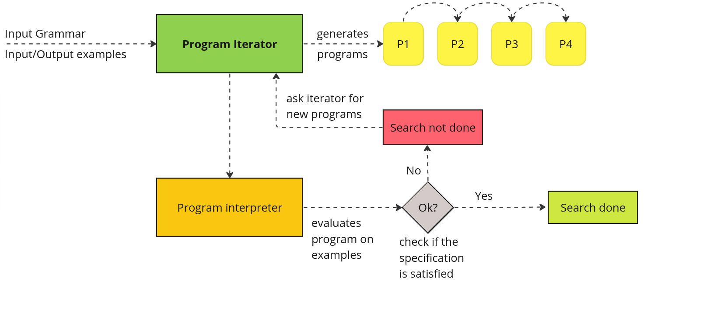
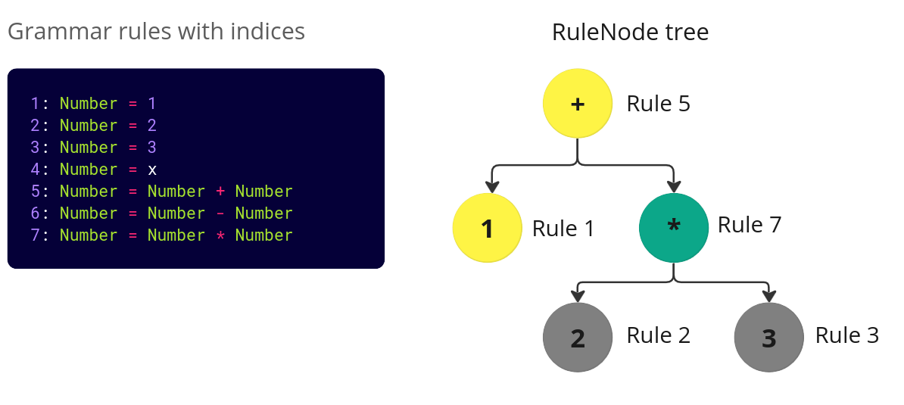

Herb Architecture and Core Concepts
Architecture Introduction
Herb is a program synthesis framework that gives users a great amount of flexibility.
At its core, program synthesis is trying to search over a space of programs in the attempt to find a program that satisfies a given specification. The specification is most often done as pairs of input/output examples.
Here is a nice picture showing the synthesis process. 
As you can see from the picture above, there are a few parts that needed in the synthesis process. Namely:
- Grammar
- Interpreter
- Iterator
- Examples
Each part will be discussed in detail how it is implemented in Herb, and small code examples will be provided. After reading through this tutorial you should have a basic general understanding of how Herb works and have an overview of important Herb modules (e.g., HerbSearch, HerbCore, HerbSpecification, HerbBenchmarks, HerbCore, etc.)
1. HerbGrammar
First of, let's start with how do we define grammars in Herb. Grammars provide a set of rules that are used when creating programs. One could have an arithmetic expression grammar that allows addition, subtraction, multiplication, etc. Another example could be a grammar that allows bit manipulation operations (e.g., shift left, shift right, etc.), string operations (e.g., concat, replace, findindex, etc.).
Ideally, it should be possible to define any grammar in Herb.
One possible approach could be to let users write the grammar definition in a file mygrammar in a grammar format (e.g., BNF). For instance, for arithmetic expressions, a user would create a grammar as shown below.
<expr> ::= <term> "+" <expr>
| <term>
<term> ::= <factor> "*" <term>
| <factor>
<factor> ::= "(" <expr> ")"
| <const>
<const> ::= integerOf course, just having a static grammar in a file is not too interesting. The user would like to create expressions from that grammar and evaluate them. But wait a minute…, how can we know how the users want the program to be evaluated from the grammar? Well, in this case, we can infer that he probably means to evaluate arithmetic expressions in the mathematical sense.
Unfortunately, we cannot do this for any user defined grammar. In general, grammars only provide the rules to create valid programs, but they do not say how to evaluate those programs. What to do then :shrug: ?
Well, one option is to let the users define both the grammar and the specification on how to evaluate programs. The users will have a great amount of flexibility with this solution. However, they would have to do that for every new grammar that they define. That will definitely be a tedious task. If you think a bit about it, this is just defining your own programming language. You would have both the syntax of the language and the how to evaluate/interpret the syntax. Can't we do better :question:
Well, it turns out that we are already programming in Julia. Can't we use the Julia's parser and interpreter to parse the grammar and evaluate programs? If this were possible, we would definitely cut down the work of users since the parser and interpreter will be already be implemented by someone else (Julia's developers). This is essentially piggybacking on the work of other people :) Programmers are known to be lazy, thus this solution seems to be a good fit.
Defining grammars in Herb - intro
Julia supports meta-programming, which allows us to invoke the Julia parser and Julia interpreter for our own needs. In our case, we want to use the Julia's parser to parse the grammar definition and use Julia's interpreter to interpret the programs. The advantage of using this approach is that users can write the grammar definition inside the code.
Let's look at a simple example.
using HerbGrammar # import @csgrammar
grammar_arithmetic = @csgrammar begin
Number = Constant
Constant = 1 | 2 | 3 # constant can be 1 or 2 or 3
Number = x
Number = Number + Number
Number = Number - Number
Number = Number * Number
endHere, we define a grammar with 6 rules.
However, if you type this the code above in the Julia's REPL, you will notice something interesting. The given output has more rules :)
1: Number = Constant
2: Constant = 1
3: Constant = 2
4: Constant = 3
5: Number = x
6: Number = Number + Number
7: Number = Number - Number
8: Number = Number * NumberThis is because the syntax 1 | 2 | 3 is a syntactic sugar for creating 3 independent rules. Thus, in fact, there are 8 rules created. Each item on the left hand of the grammar side is Symbol and the items on the right-hand side are Julia expressions.
The grammar data structure uses rule indices to access rules. In Julia, array indices start from 1!
Run the following examples and check that you can follow what the indices do.
julia> grammar_arithmetic.rules[1] # gives the RHS(expression) of the 1st rule
:Constant
julia> grammar_arithmetic.rules[6] # gives the RHS(expression) of the 6th rule
:(Number + Number)
julia> grammar_arithmetic.types[6] # gives the LHS (symbol) of the 6th rule
:Number Of course, I am just scratching the surface here... To see all the fields that the Grammar provides from the REPL you can type ? to enter docs mode and type ContextSensitiveGrammar (there is no context free grammar because a context-sensitive grammar can also be context free)
help?> ContextSensitiveGrammar
... useful docs taken from the commentsDealing with rule indices is sometimes a low-level task and that is why there are a lot of helper functions made to make it easier to interact with the grammar. For a more comprehensive overview, check this tutorial on Defining Grammars in Herb.jl.
As you might have guessed, all the things related to grammars are in the HerbGrammar package.
2. HerbCore
Looking at the following code, where we sample random grammar rules, you might wonder what is the RuleNode thing doing?
for _ in 1:10
rulenode_program = rand(RuleNode, complex_grammar, :StartExpression)
# print program tree
println("Rulenode program: ", rulenode_program)
# convert prorgam tree to an expression
expression_program = rulenode2expr(rulenode_program, complex_grammar)
println("Program: ", expression_program)
# WARNING: some programs will loop forever and you may need to stop julia
# println("Eval program: ", eval(expression))
endThe short answer to what a RuleNode is that is provides the derivation tree (AST tree) of a program in the grammar. The value at each node of the tree is given by the rule index that corresponds to the grammar.
This definition might be difficult to visualize, that is why we are going to look at some simple examples of how this work.
Arithmetic grammar example
We are going to return to our simple grammar_arithmetic that we have already seen before.
grammar_arithmetic = @csgrammar begin
Number = 1 | 2 | 3 # constant can be 1 or 2 or 3
Number = x
Number = Number + Number
Number = Number - Number
Number = Number * Number
endHow would we represent the expression 1 + 2 * 3 that is taken from this grammar? We can visualize this expression as an AST Tree like so:
We can relate this tree to the derivation rules that the grammar has as shown below: 
On the left-hand side, you can see that grammar rules and their corresponding indices. On the right-hand side, you can see the corresponding expression tree where next to each node the rule index is shown.
Thus, a RuleNode is just the derivation tree of a program from the grammar. We can now check the definition of the RuleNode in Herb. Again, using typing ? in the REPL and then RuleNode will show us useful information.
help?> RuleNode
RuleNode <: AbstractRuleNode
A RuleNode represents a node in an expression tree. Each node corresponds to a certain rule in the AbstractGrammar. A RuleNode consists of:
• ind: The index of the rule in the AbstractGrammar which this node is representing.
• _val: Field for storing immediately evaluated values <- you can diregard this field, it is not used that often
• children: The children of this node in the expression tree
// other textThe HerbCore.RuleNode is defined in HerbCore. The definition is as follows:
mutable struct RuleNode <: AbstractRuleNode
ind::Int # index in grammar
_val::Any #value of _() evals
children::Vector{AbstractRuleNode}
endIgnoring the _val field, this definition should make sense and be inline with what we have seen above.
Manipulating RuleNodes directly
One can convert a RuleNode to a nice expression using the HerbGrammar.rulenode2expr function. Let's create the RuleNode for the expression 1 + 2 * 3 and print it.
julia> grammar_arithmetic = @csgrammar begin
Number = 1 | 2 | 3 # constant can be 1 or 2 or 3
Number = x
Number = Number + Number
Number = Number - Number
Number = Number * Number
end
1: Number = 1
2: Number = 2
3: Number = 3
4: Number = x
5: Number = Number + Number
6: Number = Number - Number
7: Number = Number * Number
julia> rulenode = RuleNode(5,
[ RuleNode(1),
RuleNode(7, [RuleNode(2), RuleNode(3)])
]) # create the rulenode with indices as shown in the image above
5{1,7{2,3}}
julia> rulenode2expr(rulenode, grammar_arithmetic) # show the expression corresponding to the rulenode
:(1 + 2 * 3) # nice it worksSince RuleNodes are just trees, one can manipulate them as any other tree-like data structure. One can modify the children or grammar index directly since the struct definition is mutable. However, it is important to keep in mind that RuleNodes are very tightly defined to a grammar. A RuleNode without a grammar does not do much on its own.
Let's try to directly change a RuleNode
julia> rulenode.ind = 9 # set the root value to use the rule index 9 (But there is no rule index 9 in the grammar)
9
julia> rulenode2expr(rulenode, grammar_arithmetic) # let's try to print the new rulenode
ERROR: BoundsError: attempt to access 7-element Vector{Any} at index [9] # <- Ups error..
Stacktrace:
[1] getindex
@ ./essentials.jl:13 [inlined]
[2] rulenode2expr(rulenode::RuleNode, grammar::ContextSensitiveGrammar)
@ HerbGrammar ~/.julia/dev/HerbGrammar/src/rulenode_operators.jl:181As you can see, there is a hidden dependency between RuleNodes and grammars. The indices of the RuleNode should correspond to valid grammar indices and the number of children for a rule should correspond to the number of children that rule has in the grammar.
Useful RuleNode functions
Some very useful functions to know:
HerbCoredepth: gets the depth of the tree of the RuleNodeBase.lengthor just `length(rulenode) gets the number of nodes in the RuleNodeHerbGrammar.rulenode2exprconverts a RuleNode to a grammar
3. Iterators
Almost any programming language supports iterators. Julia supports the iterator pattern but in a bit of a different way because it Julia does have OOP. In Java there is an interface Iterator that each class (e.g., Vector, List, Map, etc.) implements.
In Julia an iterator is a type that implements two methods:
Each of these functions might return nothing if the iterator is done iterating, or it might return a tuple of the actual value that is being iterated (e.g., a number) and the state of the iterator.
Consider a simple Julia for loop:
for value in iterator
println(value)
endThis is translated to:
# iterator is any type that can be iterated (list,dict,etc)
it = iterate(iterator) # same as Base.iterate(itearator)
while it !== nothing # as long as the iterator is not done
value, state = it # get the value and the state
# do something with the value of the iterator
println(value)
it = iterate(iterator, state) # runs the iterator with the new state
end What Julia is doing here is that it passes the iterator state to subsequent Base.iterate calls after each for loop iteration. This pattern turns out to be very powerful because the search algorithms can be implemented using iterators. This is also memory efficient because we do not generate all programs at one but generate them one by one.
Thus, the search algorithms (e.g., BFS, DFS, etc.) just provide an order in which they enumerate the search space.
Build own search algorithm
Let's try to create a new search algorithm in Herb from scratch. We will need three ingredients:
- A new iterator type. Let's call it
NiceCustomIteratorfor now. - A state that the iterator has for each iteration
- Implement
Base.iterate(iter::NiceCustomIterator)and implementBase.iterate(iter::NiceCustomIterator, state)
We are going to implement an iterator that is quite funny. It will generate random programs for a given amount of time (e.g., 2 seconds) and then just enumerates programs using the BFS iterator for some other given time (e.g., 3 seconds). After that, it will start generating random programs and the process will repeat. When using BFS the enumeration will resume from the previous saved state of the BFS iterator.
We will tackle each point one by one.
But before we start coding, let's create a new folder in HerbSearch and call it ouriterator. Inside that folder, let's create a Julia file nicecustom_iterator.jl where we are going to put our code.
- First, we need to think about what to store in the iterator. We need to store a grammar in order to sample random programs, and we also need the two configurable timeouts: one for running the random search and one for running the BFS iterator.
Our definition looks like this, for now.
struct NiceCustomIterator
grammar::AbstractGrammar
timer_run_random::Float64
timer_run_bfs::Float64
end- Secondly, we need to know the state of the iterator. We need to keep track of the both running timers to ensure that we switch from random to BFS and vice versa at the right time. A simple way to do this would be to store the
start_time_randomof the random iterator and then in theiteratefunction check if the currenttime is bigger than the `starting time + timerrunrandom. We can do the same for BFS using a fieldstarttimebfs. It would also be helpful to know which timer should we check (random or BFS). For that a booleanisrunning_random` can be used.
The definition we have so far looks like this:
struct NiceCustomIteratorState
start_time_random::Float64
start_time_bfs::Float64
is_running_random::Bool # true if we are currently running random search. false if we run BFS
end- Now we need to implement
Base.iterate(iterator). This function does not take the state as a parameter because is only run once. We need to return the new program and also new state.
To simplify things, we will make our algorithm always start randomly.
function Base.iterate(iterator::NiceCustomIterator)
random_program = rand(RuleNode, iterator.grammar)
return random_program, nothing
end